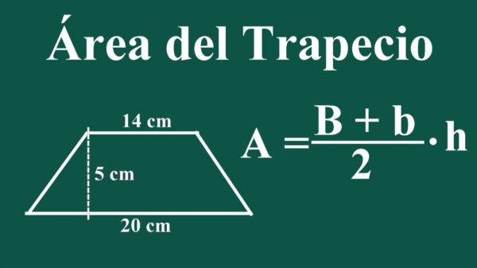

<div class="contrainer-fluid justify-content-center wh-100 shadow p-5" style="margin-top:50px;" id="contenedor1">
    <div class="row ">
   
        <div class="col-4  p-5" id="contenedor2">
            <p class="texto">
              <h1><b>Nombre:</b> Denisse Arely Gonzalez Santos</h1>
              <br>
              <h2><b>Matricula</b> S19004907</h2>
              <br>
        </div>
        <div class="d-grid gap-2 col-6 mx-auto">    
          <button class="btn btn-primary" type="button" [routerLink]= "['/areacalculator']" >Calcular area </button> 
      
      </div>
        <div class="col-8 bg-informacion contenedor3">
            
            <p>
                <a class="btn btn-primary" data-bs-toggle="collapse" href="#multiCollapseExample1" role="button" aria-expanded="false" aria-controls="multiCollapseExample1">Información</a>
            
              <div class="row ">
                <div class="col-12" >
                  <div class="collapse multi-collapse" id="multiCollapseExample1" >
                    <div class="card card-body">
                      El área del trapecio es igual a la suma de las bases por la altura, y dividido por dos.
                      En la geometría, se llama trapecio a un cuadrilátero que no tiene sus lados iguales paralelos.​​ 
                    </div>
                    <div class="col-12 ">
                      <div class="collapse multi-collapse" id="multiCollapseExample2" >
                        <div class="card card-body">
                          
                        </div>
                  </div>
                </div>
                <br>
            </div>
        </div>
  </div>
</div>
